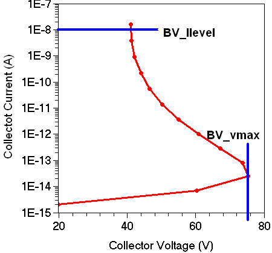

main menu
| module menu
| << previous section
| next section >>
main menu
| module menu
| << previous section
| next section >>
Python Language
5. Examples
5.1 Sentaurus Visual: Extracting Breakdown Voltage
5.2 Sentaurus Visual: Plotting Band Diagram
5.3 Sentaurus Visual: Loading CSV File Using pandas
Objectives
- To present Python examples that are specific to TCAD Sentaurus.
5.1 Sentaurus Visual: Extracting Breakdown Voltage
The files discussed in this section are part of the Sentaurus Workbench project bv_extract. The complete project can be investigated from within Sentaurus Workbench in the directory Applications_Library/GettingStarted/python/bv_extract.
This example shows how Python commands and Sentaurus Visual Python commands are mixed in a Sentaurus Visual command file to extract the open-base breakdown voltages from a bipolar junction transistor (BJT) simulation result.
The following breakdown voltages are extracted:
- BV_vmax is defined as the maximum collector voltage achieved during the sweep.
- BV_Ilevel is defined as the collector voltage at which the collector current exceeds a certain value.
If the Sentaurus Visual tool node does not have a "done" status, that is, it is not yellow, then first run the node to extract the breakdown voltages. Then, click the Run Selected Visualizer Nodes Together toolbar button to create the plot.

Figure 1. BJT breakdown voltage extraction.
Click to view the command file BV_SV_vis.py.
The file consists of two sections, which are executed depending on whether the Sentaurus Visual node is run by clicking Run Selected Visualizer Nodes Together or by pressing Ctrl+R. The mode is determined by checking whether the Python variable runVisualizerNodesTogether is defined (see Section 2.7 Visualizing Selected Nodes Together), by using the if statement:
if 'runVisualizerNodesTogether' in globals():
# Run Sentaurus Visual interactively using "Run Visualizer Nodes Together"
# Plot collector current versus collector voltage curve
...
else
# Run Sentaurus Visual in batch mode
# Extract breakdown voltages
...
When Sentaurus Visual is executed using the Run Selected Visualizer Nodes Together button, runVisualizerNodesTogether is defined, the condition 'runVisualizerNodesTogether' in globals() is True, and the code block of the if clause is executed. In this case, the collector current versus collector voltage curve is plotted.
For this purpose, first the .plt file is loaded, an empty 1D plot is created, and the parameters for this plot, such as axes and legend, are adjusted:
sv.load_file(fname, name=dataset)
sv.create_plot(name='Plot_1D', xy=True)
sv.select_plots('Plot_1D')
sv.link_plots(sv.list_plots(), unlink=True)
sv.set_plot_prop(hide_title=True, show_legend=True)
sv.set_axis_prop(
axis='x', title='Collector Voltage (V)',
title_font_size=16, label_font_size=14, type='linear',
label_format='fixed', manual_precision=True, label_precision=0
)
sv.set_axis_prop(
axis='y', title='Collector Current (A)',
title_font_size=16, label_font_size=14, type= 'log',
min=1e-15, min_fixed=True, max=ilevel, max_fixed=True
)
sv.set_legend_prop(
label_font_size=16, location='top_right',
label_font_att='bold'
)
Next, the curve is plotted:
icvc = f'IcVc({n})'
sv.create_curve(
name=icvc, dataset=dataset,
axisX='Collector InnerVoltage',
axisY='Collector TotalCurrent'
)
sv.set_curve_prop(
icvc, plot='Plot_1D', color=color, label=f'IcVc(n{n}) {legend}',
line_style='solid', line_width=3, show_markers=True
)
The code block of the else clause is executed only when the Sentaurus Visual node is run by pressing Ctrl+R. In this case, the breakdown voltage extraction is performed using the Extraction module functions extract_bvv and extract_bvi (see Section 6.8 Sentaurus Visual Python Extraction Modules and Tcl Extraction Libraries).
First, the Extraction module is loaded. Second, the .plt file is loaded.
import svisualpylib.extract as ext sv.load_file(fname, name=dataset)
Then, the breakdown voltage extraction is performed:
# Get collector voltage and current values
# sv.get_variable_data returns 1D NumPy array
vcs = sv.get_variable_data(
varname='Collector InnerVoltage', dataset=dataset
)
ics = sv.get_variable_data(
varname='Collector TotalCurrent', dataset=dataset
)
# Extract breakdown voltage
bv_vmax = ext.extract_bvv(
vcs, is_npn=True, name='BV_vmax', format='.2f'
)
bv_ilevel = ext.extract_bvi(
vcs, ics, i_o=ilevel, name='BV_Ilevel', format='.2f'
)
As a result, the following lines are printed in the .out file of Sentaurus Visual:
DOE: BV_vmax 75.36 DOE: BV_Ilevel 41.06
The extraction functions also write the extracted values to the Sentaurus Workbench table.
5.2 Sentaurus Visual: Plotting Band Diagram
The files discussed in this section are part of the Sentaurus Workbench project band_dgm. The complete project can be investigated from within Sentaurus Workbench in the directory Applications_Library/GettingStarted/python/band_dgm. To run the Sentaurus Visual nodes in this project, select the nodes and click the Run Selected Visualizer Nodes Together toolbar button.
Section 5.3.2 Band Diagram Along Cutline discusses how to plot the band diagram interactively in Sentaurus Visual. This section discusses how to plot the band diagram using Sentaurus Visual Python commands. This example is the first tool instance (Eg) in the Sentaurus Workbench project.
Click to view the command file Eg_vis.py.
In this example, Sentaurus Visual Python commands are used to load a TDR file and to generate a vertical cut from the 2D plot of a GaAs solar cell under short-circuit conditions. The cutline data is used to plot the energy band diagram under short-circuit current conditions. Finally, the cutline data is exported to a comma-separated value (CSV) file.
The TDR file is loaded by using the sv.load_file command, and a 2D plot is created from the loaded dataset by using the sv.create_plot command:
# Load TDR file tdrfile = 'solar_jsc_des.tdr' # TDR file used for creating cutline dataset = 'Structure' sv.load_file(tdrfile, name=dataset) # Create 2D plot sv.create_plot(name='Plot_Structure', dataset=dataset)
The sv.create_cutline command creates a 1D cutline normal to the x-axis at point x=0.5. The result of this command is a 1D dataset that includes all the fields from the original TDR file:
# Define cutline parameters direction = 'x' # Cutline is created perpendicular to this axis position = 0.5 # x-position of the cut # Create cutline and store resultant 1D data in cut_dataset cut_dataset = sv.create_cutline(direction, at=position, dataset=dataset)
The sv.create_plot command is used to create a new empty frame for an xy plot:
sv.create_plot(name='Plot_BandDgm', xy=True)
The band diagram is created by plotting conduction and valence band energies as well as the quasi-Fermi energies on this xy plot by using the sv.create_curve command:
# Create curves
sv.create_curve(
name='Ec', dataset=cut_dataset,
axisX='Y', axisY='ConductionBandEnergy'
)
sv.create_curve(
name='Efn', dataset=cut_dataset,
axisX='Y', axisY='eQuasiFermiEnergy'
)
sv.create_curve(
name='Efp', dataset=cut_dataset,
axisX='Y', axisY='hQuasiFermiEnergy'
)
sv.create_curve(
name='Ev', dataset=cut_dataset,
axisX='Y', axisY='ValenceBandEnergy'
)
The sv.export_variables command exports the band diagram data from the cutline dataset into a text file in CSV format:
# Export variables from cutline dataset into a CSV file
sv.export_variables(
dataset=cut_dataset, filename='n@node@_eg.csv', overwrite=True,
varList=[
'Y', 'ConductionBandEnergy', 'eQuasiFermiEnergy',
'hQuasiFermiEnergy', 'ValenceBandEnergy'
]
)
5.3 Sentaurus Visual: Loading CSV File Using pandas
The files discussed in this section are part of the Sentaurus Workbench project band_dgm. The complete project can be investigated from within Sentaurus Workbench in the directory Applications_Library/GettingStarted/python/band_dgm. To run the Sentaurus Visual nodes in this project, select the nodes and click the Run Selected Visualizer Nodes Together toolbar button.
Although Sentaurus Visual can directly read a CSV file, it can be sometimes advantageous to read the CSV file using the Python package pandas and to perform computations on the data using pandas before plotting the data.
This section discusses how to load the CSV file containing band diagram data (created in the first tool instance Eg) in Sentaurus Visual Python using pandas and to plot the band diagram. This example is the second tool instance (load_csv) in the Sentaurus Workbench project.
Click to view the command file load_csv_vis.py.
The Python statements found in the command file are explained below using an interactive IPython session launched from the Sentaurus Workbench project directory Applications_Library/GettingStarted/python/band_dgm. The pandas package is customarily imported as pd:
> gpythonsh -m IPython In [1]: import pandas as pd
The pandas.read_csv function is used to read the CSV file containing the band diagram data (created in the first tool instance Eg) into the DataFrame object eg_df:
In [2]: eg_df = pd.read_csv('n1_eg.csv', skiprows=[1])
Here, the second row (row index = 1) of the CSV file is omitted (using the argument skiprows) since it contains none values.
A DataFrame object consists of rows and columns. Data for each of the variables Y, ConductionBandEnergy, eQuasiFermiEnergy, and so on is stored in columns. By default, evaluating eg_df prints the first and the last five rows of the DataFrame. Usually, there are many rows and columns in a DataFrame. You can use the pandas.DataFrame.head() method to print the first five rows of eg_df:
In [3]: eg_df.head()
Out[3]:
Y ConductionBandEnergy ... hQuasiFermiEnergy ValenceBandEnergy
0 0.000000 1.423784 ... -1.435074e-18 0.010776
1 0.013222 1.423784 ... -2.862661e-11 0.010776
2 0.018711 1.423784 ... -3.746893e-11 0.010776
3 0.031933 1.423784 ... -6.606767e-11 0.010776
4 0.037422 1.423784 ... -7.490142e-11 0.010776
Similarly, you can print the last five rows of a DataFrame using the pandas.DataFrame.tail() method.
The columns have names called column labels. You can see all the column labels by using the columns attribute of the DataFrame:
In [4]: eg_df.columns
Out[4]:
Index(['Y', 'ConductionBandEnergy', 'eQuasiFermiEnergy', 'hQuasiFermiEnergy',
'ValenceBandEnergy'],
dtype='object')
The syntax for accessing values in a column is similar to accessing a value in a Python dictionary using its key (see Section 2.2.6 Introduction to Dictionaries). You must specify the column label inside brackets. For example, the column with column label ConductionBandEnergy contains the conduction band energy values, which can be accessed using eg_df['ConductionBandEnergy']:
In [5]: eg_df['ConductionBandEnergy']
Out[5]:
0 1.423784
1 1.423784
2 1.423784
3 1.423784
4 1.423784
...
337 -0.081578
338 -0.081578
339 -0.081578
340 -0.081578
341 -0.081578
Name: ConductionBandEnergy, Length: 342, dtype: float64
The result is a pandas object of type Series:
In [6]: type(eg_df['ConductionBandEnergy']) Out[6]: pandas.core.series.Series
You can perform computations on columns using arithmetic operators. You can add new columns to a DataFrame by using the pandas.DataFrame.assign() method to assign the results of the computation. For example, you can compute the band gap \( E_{g} = E_{c} - E_{v} \) and add a new column with the label BandGap:
In [7]: eg_df = eg_df.assign( ...: BandGap = eg_df['ConductionBandEnergy'] - eg_df['ValenceBandEnergy'] ...: )
You need to pass an argument to the assign() method using the syntax keyword = value. The keyword is the new column label (without spaces). The value is an expression used to compute the values of the column.
Instead of changing the DataFrame object on which it is invoked, the assign() method creates a new DataFrame object. To save the new DataFrame object, you must assign it to a variable. Here, you have reassigned the variable eg_df to the new DataFrame object.
You can verify that eg_df now contains the BandGap column:
In [8]: eg_df.head()
Out[8]:
Y ConductionBandEnergy ... ValenceBandEnergy BandGap
0 0.000000 1.423784 ... 0.010776 1.413007
1 0.013222 1.423784 ... 0.010776 1.413007
2 0.018711 1.423784 ... 0.010776 1.413007
3 0.031933 1.423784 ... 0.010776 1.413007
4 0.037422 1.423784 ... 0.010776 1.413007
[5 rows x 6 columns]
Each column of eg_df can be converted into a 1D NumPy array using the pandas.Series.to_numpy() method. The to_numpy() method acts on a Series object that is defined in the pandas package. For example:
In [9]: ec = eg_df['ConductionBandEnergy'].to_numpy() In [10]: type(ec) Out[10]: numpy.ndarray
The NumPy arrays are used to create Sentaurus Visual variables using the sv.create_variable command as shown here:
# Script: load_csv_vis.py ... # Create Sentaurus Visual variables using 1D NumPy arrays dataset = 'PLT' sv.create_variable(name='Y', dataset=dataset, values=y) sv.create_variable(name='ConductionBandEnergy', dataset=dataset, values=ec) ...
Finally, these Sentaurus Visual variables are used to create the band diagram using the commands discussed in Section 5.2 Sentaurus Visual: Plotting Band Diagram.
For an introduction to pandas, see (Baby)Pandas DataFrames or Working With Dataframes Using pandas.
main menu | module menu | << previous section | next section >>
Copyright © 2022 Synopsys, Inc. All rights reserved.